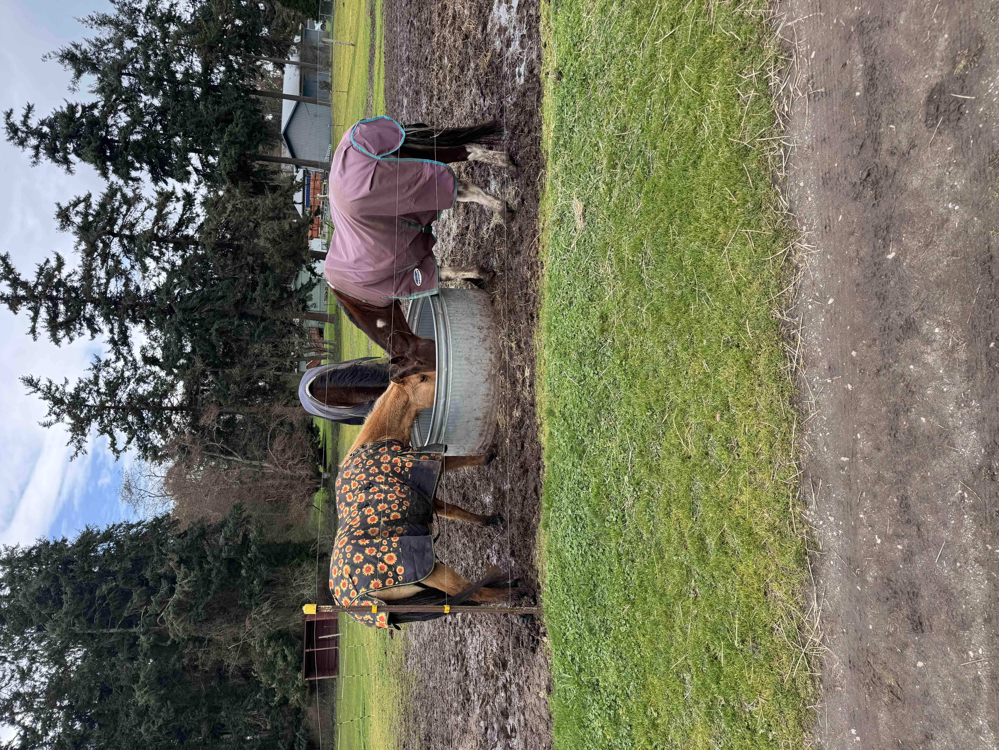
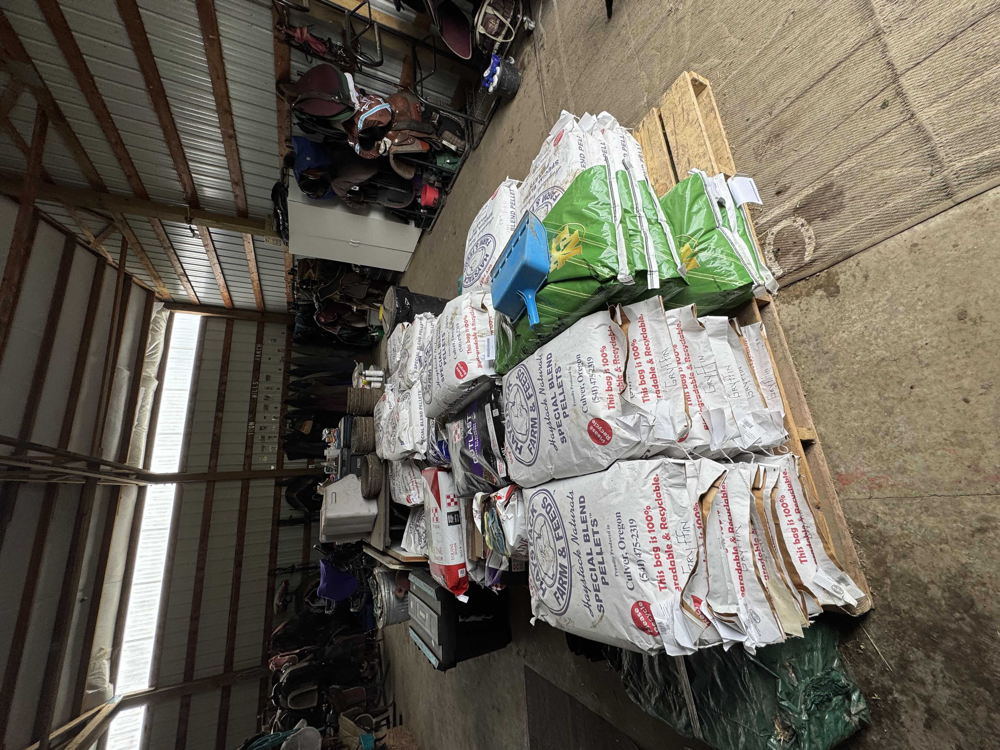
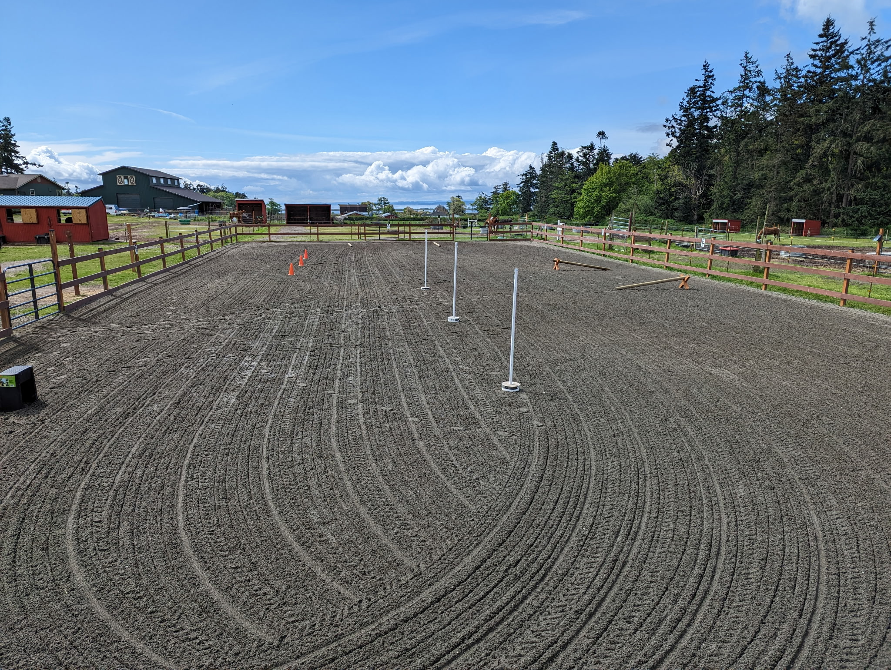
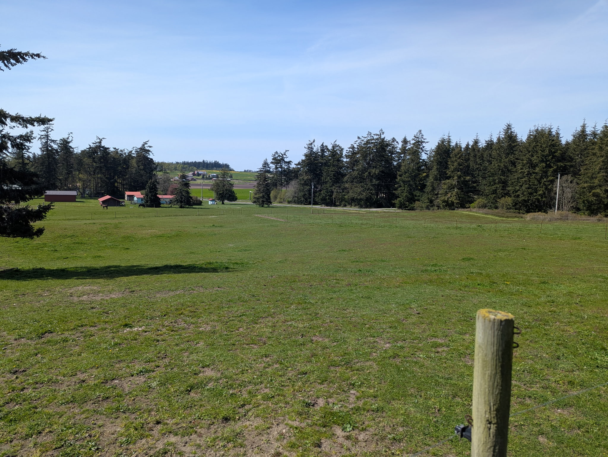
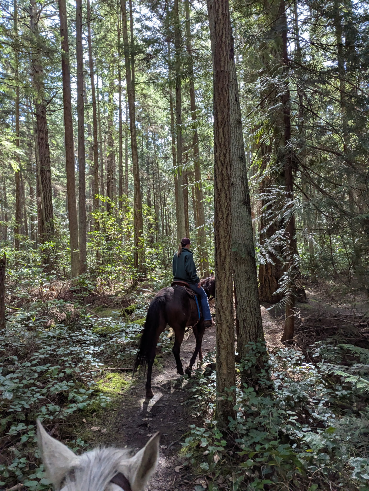
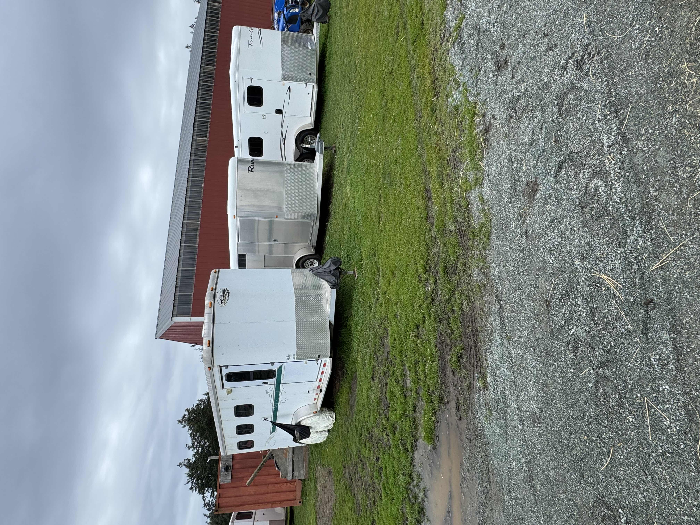
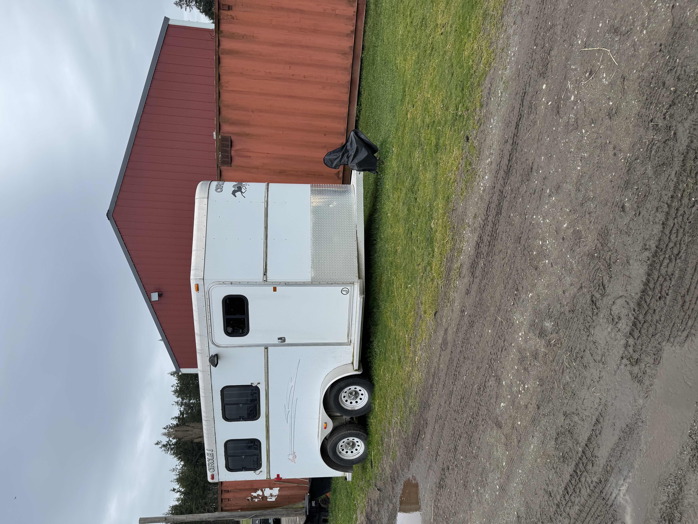

Staying at IMR
Your horse’s home away from home. Here’s what you can expect when boarding with us:
Twice-daily feeding & care – Fresh hay, grain (if needed), and daily health checks.


Full facility access – 130 × 70 arena, round pen, wash rack, and grassy pastures.


Turnout & shelters – Daily turnout in group or individual outdoor shelters.


Trail riding – Miles of beautiful trails start just a half-mile away.


Trailer parking – Available for an extra fee upon request.


We keep the ranch quiet and peaceful so both horses and owners can relax. New boarders receive a welcome packet with all details.